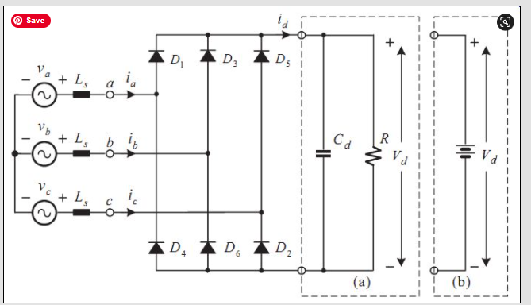
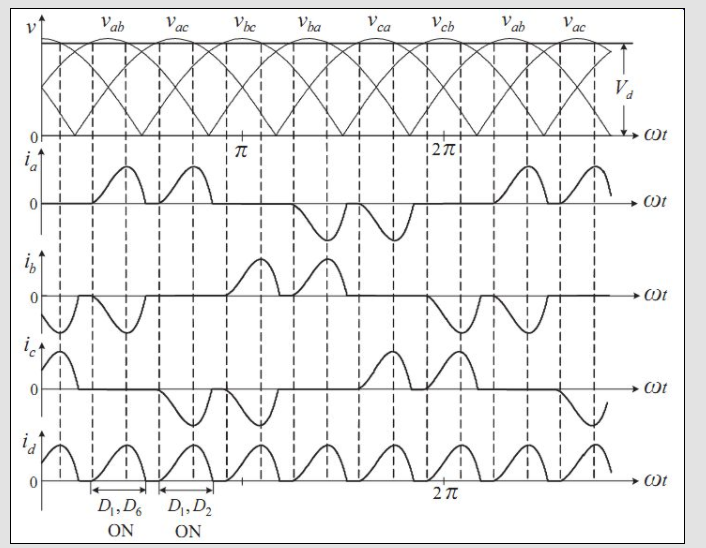
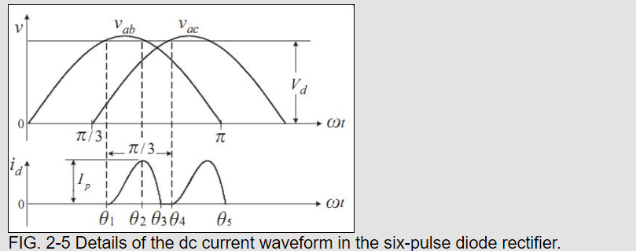

Detective Schmosby Diodni most je spojen na istosmjerni međukrug u kojem se nalazi kapacitet (kod našeg frekvencijskog pretvarača sinamics) , ispravka za sliku iznad (gore jer prikazan valni oblik kada se u međukrugu nalazi otpornik
Diodni most s kapacitetom na izlazu:

Valni oblici napona te struja na ulazu(trofazna) i struje na izlazu iz mosta

Zumirano za vođenje jednog para dioda:

Od θ1 do θ2 je Vab (linijski napon) > Vd, uključuju se diode D1 i D6, struja raste od 0 do neke vrijednosti, energija se pohranjuje u induktivitetu Ls na ulazu. Kad je Vab = Vd, napon na induktivitetu Ls je 0 i tad se Ls počinje prazniti (D1 iD6 su još “uključene”. Kad se Ls isprazni, struja id pada na nulu (θ3) , D1 i D6 se isključuju te kad linijski napon Vac u θ4 dosegne vrijednost veću od Vd, uključuju se diode D1 i D2 i opet se proces ponavlja. Svaka dioda vodi dvaput po ciklusu. Ne znam koliko ovo ima smisla, ali tak detaljno vjerojatno neće ni pitati